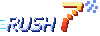
Pantallas
Formato 390 × 844 (iPhone reciente, con zonas seguras). Haz clic en una pantalla para abrir la versión HTML viva. Los textos de la interfaz están en inglés, como en tu esquema; las notas de diseño en naranja son anotaciones, no forman parte de la interfaz.


Gameplay: dos formas de usar la pantalla vertical
El juego original es horizontal y el tuyo es vertical, así que la pantalla sobra por arriba y falta por los lados. Hay dos maneras razonables de resolverlo. Las zonas marcadas: rojo = esquina superior derecha que World App se reserva, cian = zonas seguras, verde = alcance de los pulgares.

Layout A POR DEFECTO
- Ventaja: más mundo a la vista y sensación de juego "de verdad".
- Ventaja: el suelo de abajo es siempre subsuelo, así que los botones flotan sobre algo sin importancia.
- Riesgo: botones más pequeños (78–90 px) y los dedos tapan la franja baja.
- Regla de nivel: el terreno jugable vive entre el 20% y el 65% de la altura.
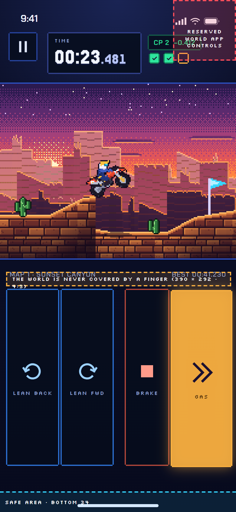
Layout B EN SETTINGS
- Ventaja: los dedos nunca tapan el mundo y los pads son enormes (84 × 288 px), fáciles sin mirar.
- Ventaja: mejor para accesibilidad y pulgares grandes.
- Riesgo: la ventana es pequeña (390 × 292), se ve menos pista y los saltos largos son más difíciles de leer.
Decidido 24-09
Se construyen los dos (misma lógica, solo cambia la presentación) y el cambio vive en Settings → Layout. Por defecto A. Cuál queda fijo se confirma jugando el prototipo de la Fase 5, no mirando dibujos.
Controles (esquema A: 4 botones digitales)
Cada botón está pulsado o no. En cada paso fijo de simulación se guarda una máscara de 4 bits; esa secuencia es el "replay" que el servidor vuelve a simular para validar el tiempo.
Botones
- GAS (bit 1): acelera.
- BRAKE (bit 2): frena; parado, da marcha atrás.
- LEAN BACK (bit 4): inclina hacia atrás (caballito, frenar giro en el aire).
- LEAN FWD (bit 8): inclina hacia delante (picar, aterrizar plano).
HUD de la carrera
- Pausa arriba a la izquierda (la esquina derecha queda libre para World App).
- Tiempo en
MM:SS.mmmcon dígitos de ancho fijo, para que no baile. - Chip de parcial al cruzar un checkpoint: verde si vas mejor que tu mejor tiempo, rojo si peor.
- Tres checkpoints (casillas) y una barra de progreso con la meta a cuadros.
- Sin marcador de posición durante la carrera: solo tú contra el reloj.
Identidad visual
Paleta muestreada de tu esquema (azul noche, amarillo de acción, verde de "hoy", cian de detalle). El píxel del arte mide 2 px CSS; los marcos tienen esquinas recortadas al estilo arcade.
Nota: probé Pixelify Sans para los números, pero el 2 se confundía con el 8 y el 5 con la S, y en un juego de tiempos eso no vale. Jersey 15 (licencia OFL) se lee bien a todos los tamaños.
Iconos (trazo cuadrado, malla de 24)
Sprites y mapas
Todo el arte de esta pasada lo dibuja código (tools/art), sin dependencias, con el mismo resultado cada vez. Sirve para
ver el estilo y el encaje en pantalla; cuando tengas arte final, lo cambiamos archivo a archivo sin tocar las pantallas.
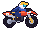
ride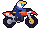
lean back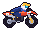
lean forward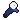
ragdoll 0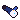
ragdoll 1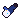
ragdoll 2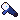
ragdoll 3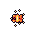
0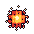
1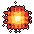
2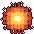
3 a1
a1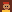
a2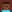
a3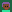
a4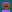
a7Los 7 mapas de la semana (nombres y temas provisionales)
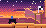
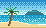
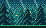
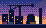
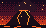
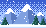
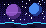
Componentes
Los mismos estilos que usan las pantallas, en vivo.
Estados de la casilla: hoy (verde, brillo), bloqueada, cerrada (gris; leaderboard congelado), completada (marca dorada).
Decisiones y lo que sigue abierto
El 24-09 dijiste "haz lo recomendado" sobre lo que te dejé el 20-09. Quedó así (detalle en docs/DECISIONS.md §1b):
Layout de gameplay DECIDIDO
Se construyen los dos. A por defecto, B disponible en Settings. Cuál queda como predeterminado final se confirma jugando el prototipo de la Fase 5.
Qué pasa al chocar DECIDIDO
Reaparece en el último checkpoint con el reloj corriendo: el choque cuesta tiempo, no intentos.
Quién aparece en el ranking DECIDIDO
Solo humanos verificados salen en el ranking. Quien no se ha verificado puede jugar en modo práctica, sin ranking (pantalla "Verify").
Sigue abierto (ninguna bloquea el trabajo):
Campeón semanal
Sigue pendiente la fórmula. La pantalla "Week results" solo fija el diseño. No voy a inventarla.
Arte
Este arte es provisional. Si prefieres un arte final (tuyo o de un artista), cada archivo de design/art se reemplaza por otro del mismo tamaño y las pantallas no cambian.